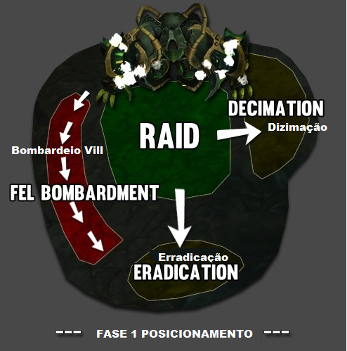
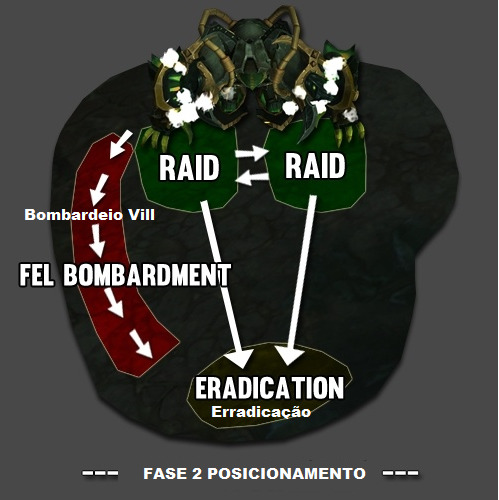

Garothi Worldbreaker
Primeira fase

Tanks
- Um tank será marcado por Bombardeio Vil e logo após o local é bombardeado com mísseis por 5 segundos que dão dano e jogam para trás todos em 7 Yards. Dessa forma o tank marcado deverá sair de perto do grupo rapidamente.
DPS / Healers
- Dois players aleatorios serão marcado por Dizimação, quando o debuff expirar cria um grande circulo verde em seu local. Logo após ele explode e causa grande dano a todos que estiverem em cima e um dano pequeno a todos da raide. Quando o player receber o defuff deve sair de perto da raid e ninguém deverá ficar em cima.
-
Aniquilação irá gerar tres poças pequenas verdes no chão, dois a tres players deverão dar soak para dividir o dano da explosão. Após a explosão aplica um debuff de 10 seg.

Segunda Fase
Ao chegar até 65 % (60% normal) o boss para de usar as habilidades anteriores e começa a castar Módulo do Apocalipse, que causa grande dano a todos da raide e deixa exposto sua armas, ele continuará a castar até que uma das armas sejam destruídas.

Tanks
- Ao final de Módulo do Apocalipse um tank devera ficar com o agro do boss, e o outro seguir para o final da sala.
DPS / Healer
- Focar o dps ná arma da Aniquilação na fase do Módulo do Apocalipse
-
Desviar do feixe de luz vil na fase do Módulo do Apocalipse

-
Após a destruição de umas das armas, o boss ira castar Erradicação, todos deverao ir para o fundo da sala para diminuir o dano.
Healer
- Erradicação Derá ser utilizado um coodown de cura.
- Salva Calcinante Dispara diversas vezes, causando dano de Fogo a alvos aleatórios a cada 2 s.
Ao matar a arma setada, a mecânica daquela arma será removida, no entanto a outra ficará mais forte aumentando 20% o dano da skill e a quantidade.
- Aniquilação Potencializada Criara 7 poças no chão para dar soak.
- Dizimação Potencializada Marca 6 players para deixar o grande circulo no chão.
Com a morte da arma da Aniquilação, devemos seguir a mecanica da arma Dizimação Potencializada

Todos
- O grupo deverá se unir(stakar) para receber o debuff, após a poça no chão todos deve se mover rapidamente para evitar o dano.
Terceira Fase
Ao chegar em 25 % (20% normal) de vida o Boss inicia novamente o Módulo do Apocalipse, permitindo que matemos a outra arma restante.
Tanks
- Ao final de Módulo do Apocalipse um tank devera ficar com o agro do boss, e o outro seguir para o final da sala.
DPS / Healer
- Focar o dps ná arma da Dizimação na fase do Módulo do Apocalipse
- Após a destruição de umas das armas, o boss ira castar Erradicação, todos deverao ir para o fundo da sala para diminuir o dano.
Healer
- Erradicação Derá ser utilizado um coodown de cura.